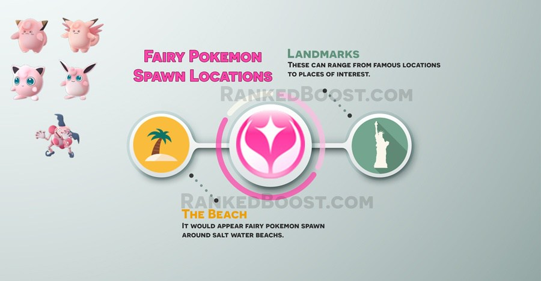

Where Do I Catch Fairy Pokemon In Pokemon Go: Fairy pokemon spawn near landmarks or places of interest. Players are reporting they can also be found by churches and cemeteries.
How To Get Fairy Type Pokemon Tips:
Where Do I Find Fairy Pokemon? – ( Fairy Pokemon Locations )
Confirmed Fairy Pokemon Go Spawn Locations: Churches – Landmarks – Places of Interest – Cemeteries
Unconfirmed Fairy Pokemon Go Spawn Locations:
There is a Total of 5 Pokemon Go Fairy Pokemon: Clefairy, Clefable, Jigglypuff, Wigglytuff and Mr. Mime.
